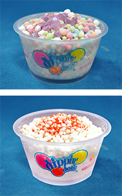

東京ジョイポリスの情報を紹介
2014.09.17
「東京ジョイポリス」では、2014年9月18日（木）から11月3日（祝・月）まで「Happy Halloween JOYPOLIS 2014」を開催いたします。
ジョイポリスでしか手に入れることのできない「ハロウィンソニック」スーパージャンボぬいぐるみの登場、大人気ディッピンドッツアイスクリームの限定メニューの発売、スタンプラリー開催等、この期間でしか楽しむことができないイベントをご用意しております。家族、友達、恋人と東京ジョイポリスならではのハロウィンをお楽しみください。
 “つぶつぶ”“さらさら”の未来感覚アイスクリーム「ディッピンドッツアイスクリーム」 では、ハロウィン限定メニューを販売します。人気フレーバー「お台場レインボー」に“パチパチ”はじけるキャンディーが乗った『ハロウィンパニック』と、定番フレーバー「バニラ」に唐辛子がトッピングされた『レッドバニラ』の2種類。『レッドバニラ』はお好みで「激辛」にいたします。
ハロウィン限定の刺激的なメニューをお楽しみください。
| 場所 | 1st Floor 「ディッピンドッツアイスクリーム」 |
|---|---|
| 価格 | 各 400円（税込） |
 セガの人気キャラクター「ソニック」の季節限定ぬいぐるみが登場します。ハロウィンバージョンのソニックをゲットできるのはこの時期だけ！
セガの人気キャラクター「ソニック」の季節限定ぬいぐるみが登場します。ハロウィンバージョンのソニックをゲットできるのはこの時期だけ！
※クレーンゲーム、ソニックカーニバルの景品となります。数量限定となりますので、無くなり次第終了とさせていただきます。
ジョイポリス館内にてスタンプラリーを実施いたします。館内アトラクションやカーニバルゲームで遊ぶともらえるスタンプを集めて、豪華賞品が当たる抽選会にチャレンジ。館内で楽しんで、豪華賞品もゲットしよう！
| 賞品 | New ニンテンドー3DS 等 |
|---|---|
| 抽選場所 | 1st Floor 「メインステージ前」 |
コスプレして撮影が楽しめるデジタルフォトスタジオ「ダイバ写真館 むちゃプリ」に、ソニックによるオリジナル「ハロウィンフレーム」が登場です。パスポートで1グループにつきＳサイズ1枚を無料でサービス！
| 場所 | 3ｒｄ Floor 「むちゃプリ」 |
|---|---|
| 価格 | 500円～ |